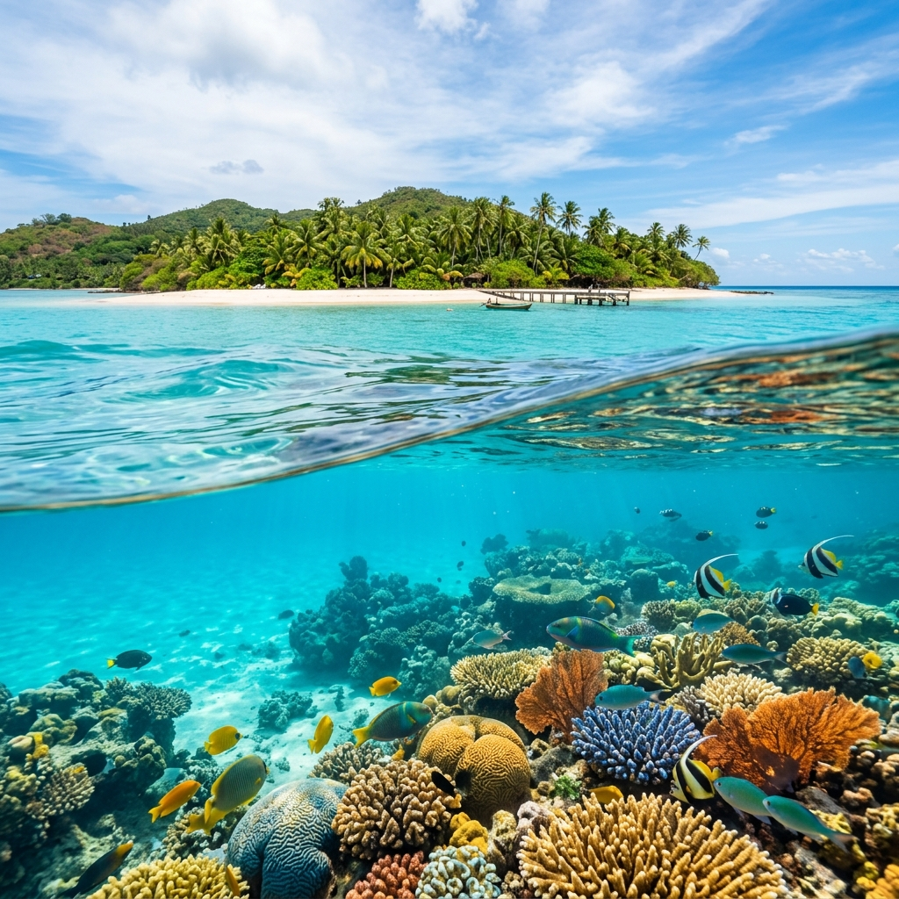

Tips
10 Tips for Your First Sunset Sailing Experience
Make the most of golden hour on the water with these essential tips for a perfect sunset cruise.
Read MoreStories, tips, and guides from the open sea.
Make the most of golden hour on the water with these essential tips for a perfect sunset cruise.
Read More
Comparing the pros and cons of catamarans and yachts to help you choose the perfect vessel.
Read More
Crystal-clear waters, vibrant coral reefs, and marine life — discover the best underwater adventures.
Read More
From jet skiing to paddleboarding, explore the thrilling water sports available during your charter.
Read More
From Monaco to Dubai, explore the most prestigious marinas where luxury meets the sea.
Read More
Port, starboard, tacking — master the language of the sea before your first voyage.
Read More